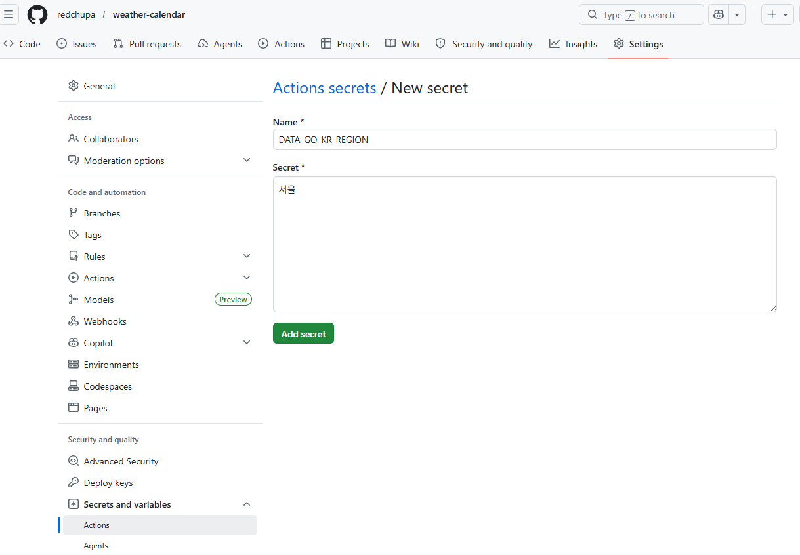
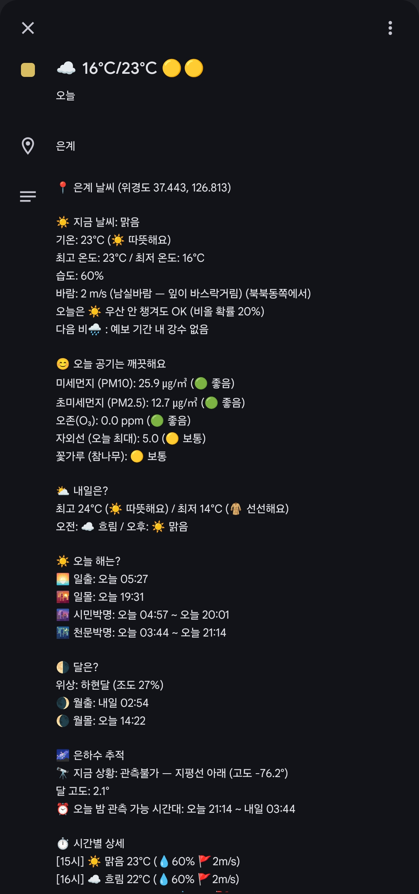

☕ 후원
이 프로젝트가 도움이 되셨다면 커피 한 잔으로 응원해주세요! 🙏
토스
|
PayPal
|
이 저장소:This repo: github.com/redchupa/weather-calendar
📘 The full English setup walkthrough is in the README.en.md. Below is the original Korean guide with the auto-calculator (Step 3) and screenshots — useful even if you don't read Korean.
코딩 안 해도 됩니다. 마우스 클릭과 복사·붙여넣기만 할 줄 알면 누구나 할 수 있어요. 아래 6단계를 차근차근 따라가면 끝나요.
💡 가장 어려운 부분은 시크릿 9개 등록과 모바일에서 안 보일 때 동기화 설정이에요. 둘 다 이 가이드에 그림과 함께 자세히 적혀 있으니 안심하세요!
No coding required. If you can click a mouse and copy/paste, you can do this. Just follow the 6 steps below at your own pace.
💡 The trickiest parts are registering 9 secrets correctly and the mobile sync setup. Both are covered in detail with screenshots — you'll be fine!
상단 이 저장소 링크 접속 후 오른쪽 상단의 [Fork] 버튼을 눌러 내 계정으로 가져옵니다.
이미 포크하신 분들은 본인 저장소 메인에서 [Sync fork] → [Update branch]를 누르세요. 최신 코드가 반영되어 Secrets 설정만으로 관리할 수 있게 됩니다.
📌 두 곳의 API를 사용합니다 (둘 다 무료, 별도 발급)This project uses two API providers (both free, separate keys)
KMA_API_KEY (날씨/특보/지진/태풍)(weather/warnings/earthquake/typhoon)DATA_GO_KR_KEY (미세먼지/자외선/꽃가루)(PM/UV/pollen)🚨 흔한 함정Common gotcha: 활용신청 버튼 눌렀는데 "신청 완료" 안내가 안 뜨면, 페이지 새로고침(F5) 후 다시 [활용신청] 클릭. 양쪽 사이트 모두 해당. If no "신청 완료" confirmation appears after clicking [활용신청], refresh (F5) and click again. Happens on both sites.
KMA_API_KEY 발급issuance1. 기상청 API 허브 가입 (이메일 + 휴대폰 본인인증만 있으면 됨, 공동인증서 불필요)sign up (email + phone verification only, no certificate needed)
2. 좌측 메뉴에서 아래 7개 서비스에 각각 활용 신청 클릭:In the left menu, apply for these 7 services:
eqk_list.php)typ_now.php)3. 상단 [마이페이지] → [인증키 현황] 에서 API Key 값을 복사Top right [마이페이지] → [인증키 현황] — copy the API key
DATA_GO_KR_KEY 발급issuance1. 공공데이터포털 가입sign up
2. 검색창에 아래 키워드를 입력해서 나오는 3개 API에 각각 [활용신청] 클릭:Search for these 3 APIs and click [활용신청] on each:
| 검색 키워드Search keyword | API 이름API name | 용도Purpose |
|---|---|---|
에어코리아 대기오염정보 |
한국환경공단_에어코리아_대기오염정보 | 🌫️ PM10·PM2.5·O3 |
생활기상지수 |
기상청_생활기상지수 조회서비스 | ☀️ 자외선UV |
꽃가루 |
기상청_꽃가루농도위험지수 조회서비스 | 🌸 참나무·소나무·잡초oak/pine/weeds |
3. 1~2일 내 승인되면 마이페이지 인증키 발급현황에서 일반 인증키(Encoding) 복사After 1~2 days, copy the encoded general auth key from My Page → Auth keys
💡 하나의 인증키로 위 3개 API 모두 호출 가능합니다. 꽃가루 API는 보건기상지수가 아니라 꽃가루 로 검색해야 정확히 찾을 수 있어요.One auth key works for all 3 APIs. The pollen API is found by searching 꽃가루 (not 보건기상지수).
① 가까운 예보 지점을 선택하세요:
② 상세 주소(도로명)를 입력하세요:
✅ 다음 단계(Secrets)에서 입력할 값입니다:
KMA_NX: - / KMA_NY: -REG_ID_LAND: - / REG_ID_TEMP: -DATA_GO_KR_REGION: - 📌 API 인증키는 두 곳에서 따로 발급받아야 합니다 (둘 다 무료)
KMA_API_KEY (Step 2에서 발급)DATA_GO_KR_KEY (일반 인증키 발급/조회)두 키는 별개이며 서로 호환되지 않습니다.
내 저장소 Settings → Secrets and variables → Actions → [New repository secret] 버튼을 눌러, 아래 9개 시크릿을 하나씩 모두 등록합니다.
📸 시크릿 등록 화면 (예시: DATA_GO_KR_REGION = 서울)

Name 칸에 시크릿 이름(예: DATA_GO_KR_REGION)을, Secret 칸에 값(예: 서울)을 입력한 뒤 [Add secret] 클릭.
이 과정을 9번 반복하면 끝.
| 이름 | 값 / 어디서 얻나 |
|---|---|
KMA_API_KEY |
Step 2에서 복사한 기상청 인증키 |
KMA_NX · KMA_NY |
Step 3에서 계산된 격자 좌표 |
REG_ID_LAND · REG_ID_TEMP |
Step 3에서 계산된 구역 코드 |
LOCATION_NAME |
달력에 표시될 동네 이름 (예: 우리집, 은계) |
DATA_GO_KR_KEY |
공공데이터포털 일반 인증키 (🌫️ 미세먼지 / ☀️ 자외선 / 🌸 꽃가루용) — 발급 방법은 바로 아래 참고 |
DATA_GO_KR_REGION |
에어코리아 예보 지역명 (Step 3에서 자동 계산됨) |
LIVING_AREA_NO |
행정표준코드 10자리 (☀️ 자외선·🌸 꽃가루용) — 행정표준코드 사이트 에서 시군구 검색. 예: 시흥 4139000000 |
DATA_GO_KR_KEY 발급 & 활용신청| 검색 키워드 | 용도 |
|---|---|
에어코리아 대기오염정보 |
🌫️ 미세먼지 (PM10/PM2.5/O3) |
생활기상지수 |
☀️ 자외선·식중독·천식 등 |
꽃가루 |
🌸 참나무·소나무·잡초 꽃가루 |
💡 하나의 인증키로 위 3개 API 모두 호출 가능합니다. DATA_GO_KR_KEY 시크릿에 등록.
DATA_GO_KR_REGION 가능 값아래 19개 중 본인 거주지에 해당하는 값을 정확히 입력 (오타·띄어쓰기 주의):
서울 · 부산 · 대구 · 인천 · 광주 · 대전 · 울산 · 세종 · 경기북부 · 경기남부 · 강원영서 · 강원영동 · 충북 · 충남 · 전북 · 전남 · 경북 · 경남 · 제주
⚠️ 시크릿 이름은 대소문자/철자 정확히. 한 글자라도 다르면 빈 값으로 처리되어 기능이 비활성화됩니다.
💡 기상특보(🚨)는 Step 2의 "특보현황 조회" 활용신청만 마치면 추가 시크릿 없이 자동으로 표시됩니다.
워크플로우 실행이 끝났다면, 본인 레포의 weather.ics 파일에 들어가 우측 상단 [Raw] 버튼을 누른 뒤 주소창 URL을 복사하세요.
⚠️ <본인_GitHub_ID> 부분은 본인의 GitHub 사용자명으로 바꿔주세요.
https://raw.githubusercontent.com/redchupa/weather-calendar/main/weather.ics
이 페이지 운영자(redchupa)의 실제 URL입니다. 본인은 fork한 후 본인 ID로 바꿔서 사용하세요.
※ 주의: 스마트폰 달력 앱(아이폰, 갤럭시 등) 자체의 동기화 주기에 따라 실제 반영은 약간 늦어질 수 있습니다.
📸 달력 적용 예시

이 프로젝트가 도움이 되셨다면 커피 한 잔으로 응원해주세요! 🙏
|
토스
|
PayPal
|